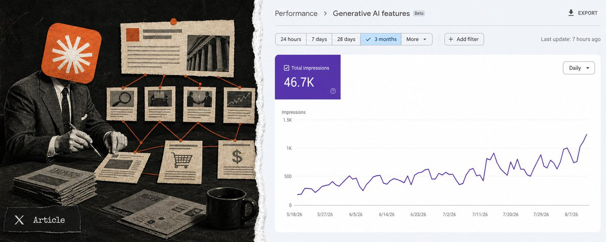

Đo như paid social, làm như search
Gamma cho rằng click trực tiếp không phản ánh hết ảnh hưởng của AEO. Nên kết hợp referral traffic với self-reported attribution — ví dụ “Bạn biết đến chúng tôi từ đâu?”.[1]
Kho nghiên cứu sống dành cho Huge Win Media — gom bằng chứng, tách nhận định khỏi giả thuyết và biến từng nguồn thành thứ HWM có thể thử, đo và cải thiện.
Chỉ hiển thị nội dung được rút ra từ một link gốc.
Tổng hợp từ nguồn vận hành, thử nghiệm thăm dò, các workflow thực hành và claim sản phẩm. Đây chưa phải “luật AEO”; mức bằng chứng được giữ riêng ở từng mục.
AEO đang chuyển từ vài bài content rời rạc thành một topic system có hai đường đọc: người dùng nhận giao diện và nội dung có chiều sâu; agent được chỉ rõ Markdown, llms.txt hoặc endpoint phù hợp. Cả hai cùng dẫn về money page, bằng chứng và một hệ thống đo luôn bật.
Gamma cho rằng click trực tiếp không phản ánh hết ảnh hưởng của AEO. Nên kết hợp referral traffic với self-reported attribution — ví dụ “Bạn biết đến chúng tôi từ đâu?”.[1]
Nguồn ước lượng chỉ khoảng 30–40% playbook trùng nhau giữa ChatGPT, Claude, Perplexity và Google AI; phần còn lại phải tùy engine.[1]
rel="alternate", rel="describedby" và HTTP Link có semantics hợp lệ; llms.txt v2 ghép chúng thành một discovery proposal. Chưa nguồn nào chứng minh agent sẽ tự động fetch, index hay cite, nên phải kiểm tra traffic thật.[11][13][14]
Toàn bộ tactic, phát hiện và backlog được gom vào một danh mục chung, sắp theo thứ tự nên làm. Priority phản ánh mức sẵn sàng triển khai và phụ thuộc — không phải độ “hay” của ý tưởng.
Không có mục nào khớp bộ lọc.
Mỗi nguồn có một URL riêng chỉ hiển thị phần tổng hợp, phát hiện và giới hạn của chính nguồn đó. Dùng mục này khi cần kiểm tra provenance trước khi đưa insight vào triển khai.
32 tip được rút trực tiếp từ cuộc phỏng vấn với Ravish Agrawal. Phần này ưu tiên mô tả cách họ thực sự làm, điều họ quan sát được và chỗ nào mới chỉ là giả thuyết — chưa chuyển vội sang bài toán của HWM.
PHẦN TRỌNG TÂM · ĐỌC TỪ TRÊN XUỐNG HOẶC NHẢY THEO NHÓMCách Gamma chọn kênh, phân bổ mục tiêu và duy trì AEO.
Ravish chủ động tìm những kênh thị trường chưa hiểu hết, thử sớm rồi mới xác định phương pháp có hợp Gamma hay không. AEO và Reddit là hai ví dụ họ vào sớm; ChatGPT Ads là thử nghiệm mới hơn. Nguyên tắc song hành của đội là “don’t be boring”: nội dung và GTM phải thú vị, vui và chống lại cảm giác nhàm chán vốn gắn với presentation.[1]
Họ ước lượng chỉ 30–40% cách làm có thể dùng chung; khoảng 60% phải thay đổi theo ChatGPT, Google AI, Perplexity hoặc Claude. Vì vậy “AEO chung chung” dễ che mất phần việc quan trọng nhất.[1]
Một số nội dung trên YouTube hoặc LinkedIn được Gamma đầu tư chủ yếu để xây dấu vết cho answer engine, dù bản thân kênh đó không mang nhiều traffic trực tiếp.[1]
Với initiative AEO, họ có thể dành khoảng 80% quyết định cho agent/crawler và 20% cho trải nghiệm con người. Nội dung không cần clickbait, nhưng người vô tình xem vẫn phải hiểu và thấy hữu ích.[1]
Không có bài đăng một lần rồi xong. Họ tiếp tục tạo, theo dõi và làm mới dấu vết vì citation có thể biến mất, prompt thay đổi và nền tảng đổi cách crawl theo chu kỳ rất ngắn. Ravish ví cửa sổ organic hiện tại với Facebook năm 2012: nên tận dụng, nhưng không giả định nó sẽ mở mãi.[1]
Gamma phát hiện cơ hội và chọn truy vấn để đánh.
Họ chú ý AEO khi referral traffic từ ChatGPT tăng 8×, dù vẫn dưới 1% tổng traffic. Tín hiệu nhỏ nhưng tốc độ tăng khác thường đủ để mở một hướng điều tra mới.[1]
Với YouTube, Gamma ưu tiên câu chữ người dùng thực sự hỏi trong prompt hoặc search phrase thay vì tiêu đề clickbait. Mục tiêu là để transcript và heading khớp đúng cách answer engine diễn giải câu hỏi.[1]
Thay vì lao vào “best CRM”, họ đề xuất bắt đầu ở “best CRM for SMB”, “for fintech”, “for health tech”, thậm chí ngách sâu hơn. Khi bối cảnh hẹp, cạnh tranh thấp hơn và cơ hội tạo relevance/topical authority rõ hơn.[1]
Một nhánh hỏi khách hàng mục tiêu đang ở đâu; nhánh còn lại hỏi vấn đề/sản phẩm liên quan đang được bàn ở đâu. Với Gamma, đó có thể là cộng đồng SaaS/founder hoặc các cộng đồng PowerPoint, Canva và presentation.[1]
Cách họ tạo nội dung có thể được crawl, so sánh và trích dẫn.
Website cho phép Gamma chủ động mô tả sản phẩm, use case và mối quan hệ với đối thủ. Theo quan sát của họ, nội dung mới trên site có thể được crawl nhanh và được trích dẫn tương đối tốt.[1]
Họ phản đối cách tạo hàng loạt bài mỏng chỉ lặp từ khóa. Nội dung nên giải thích sâu lý do, tiêu chí, điểm khác nhau và thông tin giúp người đọc ra quyết định; AI có thể hỗ trợ viết nếu đầu vào và nghiên cứu đủ tốt.[1]
Pattern rõ nhất Ravish nhìn thấy không phải view hay upvote, mà là thương hiệu được người khác nhắc đến cạnh một lựa chọn khác. Nội dung chỉ nói riêng về mình thường yếu hơn nội dung giúp engine hiểu “khác gì, phù hợp lúc nào”.[1]
Blog, PR và review ngoài domain là cụm quan trọng thứ hai hoặc thứ ba trong playbook của họ. Trong mental model của Ravish, Reddit chủ yếu tác động training data/memory; owned và third-party blogs là “cited data”, có khả năng kéo người dùng về hệ sinh thái Gamma.[1]
Ravish chưa thấy answer engine luôn ưu tiên website lâu đời. Ở giai đoạn hiện tại, site nhỏ nhưng có nội dung AI-first, rõ và sát truy vấn vẫn có cơ hội; đây là quan sát thực chiến, chưa phải quy luật đã kiểm chứng.[1]
Phần tactical chi tiết nhất trong cuộc phỏng vấn.
Cộng đồng riêng của Gamma chứa câu hỏi thực như cách export presentation sang PowerPoint, PDF hoặc ảnh. Những thread hỗ trợ cụ thể này đã được họ thấy xuất hiện trong citation.[1]
Subreddit mới của thương hiệu thường được nhặt chậm hơn. Với đội mới bắt đầu, họ khuyên hiện diện ở cộng đồng đã có người dùng trước; subreddit riêng là tài sản dài hạn cần xây dần.[1]
Gamma có thể nói chuyện trong cộng đồng PowerPoint vì người dùng tạo deck bằng Gamma rồi export sang PowerPoint. Họ bước vào cuộc trò chuyện qua luồng công việc thật và tính tương thích mở, không bằng câu “Gamma rất tuyệt”.[1]
Frame hữu ích là “Gamma khác PowerPoint/Google Slides ở đâu?” thay vì chỉ khen Gamma. Họ còn chủ động chọn đối thủ muốn đứng cạnh để định vị điểm mạnh như MCP, Zapier, import/export và hệ sinh thái mở.[1]
Ravish chưa thấy comment làm thương hiệu được trích dẫn nhiều hơn. Ông xem comment chủ yếu là tín hiệu sentiment; cố phủ comment để leo citation không phải chiến thuật họ tin là hiệu quả.[1]
Theo dữ liệu họ quan sát, nội dung Reddit mới thường cần khoảng 30–45 ngày để trở thành citation trong ChatGPT. Perplexity có thể nhặt nhanh hơn nhiều với truy vấn rất sát, đôi khi từ ngày hôm sau.[1]
Gamma thường bỏ qua cộng đồng chỉ có vài nghìn hoặc vài chục nghìn thành viên vì không đủ tác động ở quy mô của họ. Nhưng Ravish thừa nhận startup có thể khai thác cộng đồng nhỏ, nhất là khi truy vấn đủ ngách.[1]
Ưu tiên và cơ chế khác nhau theo nơi người dùng hỏi.
Với consumer/prosumer của Gamma, hơn 90% phần AEO được họ quy cho ChatGPT. Reddit là kênh có ảnh hưởng rõ nhất ở đây; website sở hữu và third-party tiếp tục hỗ trợ retrieval/citation.[1]
Đây là nơi câu “SEO tốt là AEO tốt” hợp lý nhất theo Ravish. Muốn hiện diện trong Google AI, họ vẫn xem SEO, relevance và phân phối từ Google là lớp bắt buộc chứ không tách thành game hoàn toàn mới.[1]
Họ thấy Perplexity coi trọng website khác nói về thương hiệu và có thể nhặt nội dung rất nhanh khi truy vấn đủ cụ thể. Vì thế third-party coverage và câu chữ sát phrase đáng ưu tiên hơn Reddit-first đơn thuần.[1]
Gamma đã ra MCP connector và thấy usage tăng khi người dùng có thể yêu cầu Claude tạo presentation bằng Gamma ngay trong workflow. Ravish xem Claude gần “app store” hơn search engine. Tuy nhiên, MCP hiện chưa tự tạo discovery: Gamma vẫn phải acquire user, giới thiệu connector và hướng dẫn họ kết nối.[1]
Gamma được trích dẫn từ video 400K view lẫn 18K view; LinkedIn post/article ít engagement vẫn có thể được index. Họ chưa tìm thấy ngưỡng view, like hoặc comment đáng tin cậy, nên ưu tiên nội dung và ngữ cảnh hơn vanity metrics.[1]
Với consumer/prosumer, Ravish xếp ChatGPT → Google AI Overviews → Perplexity → Claude. Với enterprise, ông có thể đưa Claude lên đầu, sau đó cân nhắc Copilot; đây là heuristic theo hành vi người dùng, không phải benchmark đã kiểm chứng.[1]
Ravish nói Gamma chưa ở mức top-class với Google AI Overviews vì trước đó chưa đầu tư đủ sự chú ý. Họ dự kiến tăng đầu tư khi AI Mode phát triển nhanh hơn dự đoán; đây là khoảng trống thật trong playbook, không phải thành công đã có.[1]
Ravish thấy Quora và Medium vẫn được index; Substack yếu hơn khi nội dung bị gated. LinkedIn và Instagram là bet 6–12 tháng dựa trên UGC và reputation signals, chưa phải playbook Gamma đã chứng minh. X/Twitter và Discord hiện chưa có pattern đủ rõ.[1]
Cách họ nhìn traffic, attribution và tuổi thọ citation.
Gamma đưa ChatGPT thành lựa chọn rõ trong câu hỏi “How did you hear about us?”. Referral click có lúc giảm nhưng self-reported discovery tiếp tục tăng, cho thấy ảnh hưởng kiểu view-through mà last-click không phản ánh hết.[1]
Họ lưu trong spreadsheet: prompt nào trích nguồn nào, citation share thay đổi ra sao và khi nào thương hiệu biến mất. Dù là khách hàng Profound, Gamma vẫn chưa đo được lúc citation bị gỡ hoặc suy giảm nên tiếp tục theo dõi thủ công; chu kỳ ba tháng mới chỉ là giả thuyết vận hành.[1]
Những chỗ nguồn thừa nhận chưa có công thức chắc chắn.
Họ chưa biết chính xác vì sao một Reddit post thắng citation, tuổi thọ citation là bao lâu, LinkedIn ưu tiên tín hiệu nào hay memory tác động đến discovery đến mức nào. Gamma thấy tín hiệu hứa hẹn về memory và first-mover advantage, nhưng cơ chế tái đề xuất vẫn chỉ là thesis cần kiểm chứng.[1]
Đối chiếu từng câu trong post của Ira Bodnar với phát biểu gốc trong video. Post rất hữu ích để scan nhanh, nhưng nhiều câu đã biến quan sát hoặc giả thuyết thành quy luật chắc chắn.[1][2]
| # | Claim trong post | Kết luận | Đối chiếu với video gốc |
|---|---|---|---|
| 1 | Viết content cho Claude là vô ích; Gamma làm app Claude. | Phóng đại | Ravish nói Claude cite ít hơn và hướng phù hợp là MCP/ecosystem. Gamma có connector và thấy usage; “vô ích” là lời tuyệt đối hóa.[1][2] |
| 2 | Gamma nhét ưu đãi “10% extra” vào file agent đọc để hack signup. | Gán nhầm | Ravish nói một vài người bạn làm growth đang thử cách này và nói rõ Gamma chưa làm nhiều ở mảng đó. Không phải tactic Gamma đã triển khai.[1][2] |
| 3 | ChatGPT trả lời 60% từ live web, 40% từ memory. | Chưa xác minh | Con số được Ravish nhắc lại từ “một nghiên cứu nào đó”, không nêu tên và không phải dữ liệu Gamma đo. Nên giữ như claim gián tiếp, không phải fact nền tảng.[1][2] |
| 4 | LLM không bao giờ cite lời khen, chỉ cite so sánh. | Phóng đại | Ravish chỉ nói comparison là pattern gần nhất ông nhìn thấy và thừa nhận chưa có công thức. “Không bao giờ” không có trong nguồn.[1][2] |
| 5 | ChatGPT gửi nhiều khách hơn analytics thể hiện 8×. | Ghép sai số | 8× là tốc độ tăng referral traffic trong một giai đoạn, không phải mức analytics đếm thiếu. Self-report cao hơn click-through là quan sát riêng, không có hệ số 8×.[1][2] |
| 6 | ChatGPT Search chạy trên Bing. | Claim nguồn | Ravish nói ChatGPT lấy phần lớn query từ Bing, nhưng không đưa bằng chứng và đây là cơ chế có thể thay đổi. Nên ghi “theo Ravish”, không đóng thành sự thật phổ quát.[1][2] |
| 7 | Chỉ ChatGPT đọc Reddit; Claude và Gemini hoàn toàn bỏ qua. | Quá tuyệt đối | Ông nói “Reddit only works for ChatGPT” theo playbook/quan sát của mình. “Các engine khác hoàn toàn không đọc” là diễn giải mạnh hơn nguồn. Mốc 30–45 ngày cho ChatGPT được nêu trong video.[1][2] |
| 8 | Memory khiến brand thắng mọi câu trả lời lặp lại. | Giả thuyết | Gamma thấy tín hiệu hứa hẹn và Ravish tin memory tạo first-mover advantage, nhưng ông gọi hệ thống là black box. “Thắng mọi repeat answer” chưa được chứng minh.[1][2] |
| 9 | Video 18K và 400K view đều được cite; dùng prompt làm title. | Khá sát | Đúng với quan sát và cách Gamma làm. Chỉ cần tránh nâng thành “view hoàn toàn không quan trọng”; nguồn nói họ chưa thấy pattern theo view.[1][2] |
| 10 | Subreddit nhỏ không bao giờ tạo citation. | Sai | Gamma bỏ qua cộng đồng nhỏ vì không đủ tác động ở quy mô của họ. Ravish thừa nhận startup vẫn có thể dùng và AEO vẫn có thể nhặt nội dung từ subreddit nhỏ, nhất là query ngách.[1][2] |
| 11 | Substack ít được cite vì gated; Medium và Quora vẫn được index. | Khá sát | Phản ánh đúng phát biểu. Nuance: Ravish thấy Quora được cite nhưng chưa thấy nó “influence” rõ như Reddit.[1][2] |
| 12 | Website của Gamma là nguồn được cite nhiều thứ hai. | Gần đúng | Ravish xếp owned website thứ hai trong ranking, nhưng nói vị trí 2–3 thường đổi với third-party websites. Đây là ranking quan sát, không phải bảng số liệu citation chính thức.[1][2] |
| 13 | Một comment Reddit tiêu cực mắc trong ChatGPT nhiều tháng; sentiment xấu được cite ngang tốt. | Gán nhầm | Đây là anecdote và theory của người dẫn về một công ty khác. Ravish nói ông chưa đào sâu và không xác nhận cơ chế đó. Không phải learning của Gamma.[1][2] |
| 14 | Citation chết sau khoảng ba tháng; Gamma chiếm lại hàng quý. | Biến giả định thành fact | Gamma có theo dõi citation bằng spreadsheet. Nhưng “ba tháng” chỉ là ví dụ giả định khi Ravish suy nghĩ về half-life; ông nói rõ chưa biết tuổi thọ thật.[1][2] |
| 15 | B2B: Claude và Copilot thắng ChatGPT. | Heuristic | Với enterprise, Ravish đoán có thể xếp Claude đầu và Copilot thứ hai. Ông cũng nói chưa biết cách khiến Claude recommend tool. “Beat ChatGPT” nghe chắc chắn hơn nguồn.[1][2] |
| 16 | Topic rộng mất 45 ngày; topic ngách chỉ mất một ngày. | Trộn ba quan sát | 30–45 ngày là Reddit → ChatGPT; next-day là phrase cụ thể → Perplexity; Google AI nhặt trong một ngày là anecdote của người dẫn. Không phải một quy luật broad-vs-niche thống nhất.[1][2] |
| 17 | Chưa ai từng thấy X được LLM cite. | Quá rộng | Ravish và người dẫn nói họ chưa thấy X được index/cite và sẽ kiểm tra thêm. Không đủ cơ sở để nói “nobody has ever seen”.[1][2] |
| 18 | LinkedIn citation hỗn loạn; post 500K like và no-name được cite ngang nhau. | Đúng lõi | Ravish chưa thấy engagement hoặc influencer status là pattern và đánh giá LinkedIn còn sớm. “Cùng tỷ lệ” không được đo trong nguồn.[1][2] |
| 19 | Instagram là kênh tiếp theo; IG và LinkedIn tác động LLM trong 6–12 tháng. | Đúng là bet | Phản ánh đúng thesis của Ravish. Đây là dự đoán dựa trên UGC và reputation signals, không phải kết quả Gamma đã kiểm chứng.[1][2] |
| 20 | AI Mode đang làm CTR sụp đổ cho mọi người. | Phóng đại phạm vi | Ravish nói các growth peer ông trao đổi đều thấy CTR giảm. Không có benchmark hay số liệu để mở rộng thành “everyone”.[1][2] |
| 21 | Fake Gamma đang đánh cắp signup. | Đúng hiện tượng | Gamma thấy copycat clone landing page, dùng tên tương tự và mua ads; người dùng có thể nhầm. “Stealing signups” là diễn giải hợp lý nhưng nguồn không định lượng signup bị mất.[1][2] |
| 22 | Bet tiếp theo: làm sản phẩm để agent tự signup; Claude Code tự cài năm tool. | Đúng là bet | Ravish bullish về agent-first product và kể Claude Code dùng khoảng năm tool ông không cần biết. Ông nói Gamma chưa làm nhiều và chưa có mental model rõ; đây không phải tactic đã chứng minh.[1][2] |
| 23 | ChatGPT không biết Forbes là Forbes; blog vô danh được cite ngang nhau. | Phóng đại | Ravish gọi website AEO hiện tại là “level playing field”, nhưng vẫn thừa nhận Forbes có authority. “Không biết Forbes là Forbes” là câu giật mạnh hơn nguồn; cửa sổ có thể đóng là thesis, không phải timeline chắc chắn.[1][2] |
Dùng tốt như checklist để phát hiện chủ đề, nhưng không nên dùng nguyên văn làm playbook. Giá trị lớn nhất nằm ở các pattern: prompt-led content, comparison, self-report attribution, engine-specific tactics và always-on tracking. Các câu có số liệu hoặc chữ tuyệt đối như “never”, “only”, “8×”, “three months” cần quay lại nguồn gốc trước khi hành động.
Một pseudoexperiment trên website cá nhân của Spock: giữ frontend gọn cho người đọc, đồng thời đặt một lớp thông tin dày và truy vấn được cho LLM. Đây là bằng chứng độc lập, không phải cách Gamma đã làm.[3]
Luận điểm trung tâm: trang cho người nên ưu tiên thiết kế, cảm xúc và khả năng đọc; phía sau là một “offering layer” ngắn gọn, giàu dữ kiện để agent chọn đúng phần rồi trình bày lại cho người dùng. Tác giả gọi cấu trúc này là một internet kiểu reverse mullet.[3]
llms.txt chưa đủVới 6 model × 10 lần chạy, chỉ GPT-5.5 chủ động tìm llms.txt đúng 1 lần; 5 model còn lại không tìm lần nào. File tồn tại không đồng nghĩa agent biết phải đọc nó.[3]
Sau khi thêm link nhỏ tới /llms.txt cùng title giải thích đây là hồ sơ đầy đủ cho LLM, cả 6 model đều fetch file trong cả 10 lần chạy. Nudge rõ ràng là phần của kiến trúc, không chỉ là decoration.[3] Ian và llms.txt v2 bổ sung cách quảng bá bằng rel="alternate" và rel="describedby", nhưng chưa công bố outcome test.[11][13]
Khi tác giả công bố /llms?query= và /llms/json?query= trong nudge, các model chủ động gọi endpoint nhiều lần. Plain text được dùng nhiều hơn JSON; mọi model vẫn có xu hướng mở llms.txt trước.[3]
llms.txt dài có thể bị tóm tắt hoặc bỏ sót chi tiết trước khi tới model chính. Endpoint query giải bài toán này theo logic RAG: trả đúng đoạn liên quan thay vì bắt agent nuốt toàn bộ hồ sơ.[3]
Claude, GPT, DeepSeek, Qwen và Grok tạo phân bố truy vấn khác nhau. Kiểm định chi-square cho thấy khác biệt khó giải thích bằng ngẫu nhiên, nhưng cluster có silhouette thấp nên chưa thể gọi đây là “sở thích” ổn định của từng model.[3]
Nếu model thật sự có pattern truy vấn khác nhau, “model-targeted SEO” có thể xuất hiện: cùng một kho dữ kiện nhưng cách expose, chunk hoặc ưu tiên thông tin thay đổi theo agent. Bài viết đặt đây là câu hỏi tương lai, chưa phải kết luận.[3]
llms.txt, Markdown representations, HTTP Link, OpenAPI, MCP và API là các cách làm website dễ đọc hoặc dễ thao tác hơn với agent. Reverse mullet không chỉ là một file; nó là tách presentation layer khỏi information/action layer. Trong đó, link relations có semantics đã đăng ký, còn llms.txt vẫn là proposal.[3][13][14]
Chỉ thử trên một website, prompt “explore everything”, sample nhỏ và clustering yếu. Kết quả chứng minh nudge hoạt động trong setup này; chưa chứng minh mọi agent ngoài đời sẽ dùng llms.txt hoặc endpoint tương tự.[3]
llms.txtIan Nuttall bổ sung hai discovery signal cụ thể vào checklist làm website dễ đọc hơn với agent. Đây là implementation proposal, không phải dữ liệu chứng minh ranking hoặc citation tăng.[11]
rel="alternate"Thêm <link rel="alternate" type="text/markdown" href="/page.md"> để client không phải tự đoán URL Markdown. IANA xác nhận alternate nghĩa là một substitute cho resource hiện tại; llms.txt v2 cũng khuyến nghị pattern này.[11][13][14]
Evidence locator: Ian, mục 1 — “add <link rel="alternate" type="text/markdown"> … specifying the exact markdown version”.
llms.txt bằng rel="describedby"Ian đề xuất HTTP header Link: </llms.txt>; rel="describedby"; type="text/markdown". describedby là registered relation cho resource cung cấp thông tin về context; llms.txt v2 khuyến nghị dùng relation này trong HTML hoặc HTTP Link header.[11][13][14]
Evidence locator: Ian, mục 2 — exact Link header trong post.
Reverse Mullet chứng minh trong một pseudoexperiment rằng agent cần một nudge để tìm lớp dành cho máy.[3] Ian và llms.txt v2 chuyển nudge đó từ một link thủ công thành web-discovery metadata có semantics rõ. Đây là cách làm sạch hơn về hạ tầng, nhưng chưa có test outcome đi kèm trong hai nguồn mới.[11][13]
Post được Ian quote từ Zeno Rocha đưa ra năm thay đổi hạ tầng. Nó là workflow proposal, không phải benchmark; thư viện tách từng tactic để HWM có thể test độc lập.[12]
/llms.txt để giảm việc tool đoán URLZeno mô tả llms.txt như index giúp search tools tìm đúng page. Nguồn llms.txt tự gọi đây là một proposal nhằm cung cấp thông tin giúp agent dùng website; chưa phải web standard hay bằng chứng mọi crawler sẽ đọc file.[12][13]
Evidence locator: Zeno, mục 1 — “add an llms.txt so search tools stop guessing urls”.
Agent hoặc crawler có thể fetch resource mà không tạo session giống người dùng. Zeno khuyên đọc server logs để thấy URL, status code, user agent và crawl path thực tế; post không cung cấp schema log, baseline hay outcome.[12]
Evidence locator: Zeno, mục 2 — “check your server logs, not your analytics”.
Zeno đề xuất một Markdown representation cho mọi page cùng content negotiation headers. llms.txt v2 cũng khuyến nghị page có bản Markdown tại URL ổn định và có thể quảng bá qua HTML <link> hoặc HTTP Link header.[12][13]
Evidence locator: Zeno, mục 3–4 — “serve a markdown version of every page” và “support content negotiation headers”.
Nội dung chỉ xuất hiện sau client-side interaction có thể khó tiếp cận với tool không chạy đầy đủ JavaScript. Zeno khuyên rethink các widget này; post không chứng minh engine cụ thể nào bỏ qua chúng, nên đây là audit item chứ chưa phải ranking rule.[12]
Evidence locator: Zeno, mục 5 — “rethink your JS-only widgets”.
Cross-check tách hai lớp thường bị trộn: llms.txt vẫn tự mô tả là proposal; còn alternate, describedby và HTTP Link là các cơ chế web có semantics đã được đăng ký hoặc chuẩn hóa.[13][14]
Proposal khuyến nghị Markdown URL ổn định, rel="alternate" trỏ tới bản Markdown và rel="describedby" trỏ tới file llms.txt bao phủ path hiện tại. Cả HTML link element lẫn HTTP Link response header đều được nêu; đây là thiết kế đề xuất để client tìm resource, không phải bảo đảm adoption.[13]
Evidence locator: section về Markdown files và standard link relations, gồm ví dụ Link: </docs/page.html.md>… </docs/llms.txt>….
IANA định nghĩa alternate là substitute cho context và describedby là resource cung cấp thông tin về context. RFC 8288 chuẩn hóa Link header. Các chuẩn này xác nhận markup có nghĩa hợp lệ; chúng không nói ChatGPT, Claude, Google hay crawler bất kỳ phải fetch, index, cite hoặc rank resource đó.[14]
Evidence locator: IANA Link Relations registry, rows “alternate” và “describedby”.
Năm post cho thấy một lớp vận hành mới đang hình thành quanh AEO: không chỉ viết nội dung, mà tự động hóa nghiên cứu, lập bản đồ cơ hội, sản xuất, mua phân phối và kiểm tra lại. Đây là tín hiệu thị trường; phần lớn chưa kèm dữ liệu outcome.[4][5][8]
Cody Schneider đề xuất lấy sitemap của khoảng 10 đối thủ, gom toàn bộ page vào một database, tìm khoảng trống nội dung rồi đối chiếu với những trang đang đứng page one trước khi sản xuất bằng SEO agent.[4]
Điểm đáng giữ: nghiên cứu corpus trước khi viết. Chưa có: dữ liệu chứng minh workflow này tạo ranking, citation hay revenue.
Thực hành được đề xuấtswyx khuyên chạy Codex, Claude, Gemini hoặc Devin theo lịch để tự tìm cách cải thiện SEO/AEO hằng tuần. Ý này củng cố mô hình always-on của Gamma, nhưng post không nêu prompt, output, guardrail hay kết quả đo được.[8][1]
Điểm đáng giữ: biến research thành cadence. Rủi ro: automation có thể khuếch đại claim yếu nếu không có evidence gate.
Khuyến nghị, chưa có kết quảFlorian Darroman giới thiệu “Claude for Boring Marketing”: nhập website, hệ thống triển khai một đội SEO agent và tuyên bố có thể mang khách từ Google lẫn AI Search trên autopilot.[5]
Đây là bằng chứng rằng workflow đang được productize, không phải bằng chứng hệ thống thực sự tạo khách hàng; post không công bố methodology hoặc performance.
Thông báo thương mạiDan Kulkov đề xuất audit nhanh việc ChatGPT có recommend doanh nghiệp không, sau đó dùng marketplace để tìm site trong niche và mua mentions. CrowdReply quảng bá catalog hơn 40.000 publisher và claim đó là những site AI đọc trước khi trả lời.[6]
Điểm mới: AEO đang tạo thị trường paid placement. Chưa rõ: mention nào thực sự được crawl/cite, tính bền vững, disclosure và rủi ro thao túng.
Claim thương mại, cần kiểm chứngIsaac, dẫn lại Gary Vaynerchuk, cho rằng YouTube Shorts đang “feed” Gemini và có thể giúp sản phẩm xuất hiện trong AI Search sau này.[7] Tài liệu chính thức của Google xác nhận Gemini dùng thông tin công khai từ YouTube để tìm video, playlist, channel và hiểu nội dung video.[9]
Phần được xác nhận là Gemini có thể truy cập và hiểu nội dung YouTube. Google không nói mọi video đều được index, Shorts làm LLM “yêu” thương hiệu, hay việc đăng Shorts sẽ cải thiện recommendation/citation. Vì vậy đây là thesis phân phối đáng thử, chưa phải cơ chế ranking đã biết.
Cơ chế truy cập: có · Tác động ranking: chưa rõCác post này không thay thế 32 tactic của Gamma; chúng cho thấy lớp tooling đang xuất hiện quanh tactic đó. Vòng lặp mới có thể là: agent nghiên cứu → con người duyệt bằng chứng và positioning → agent sản xuất/phân phối → hệ thống đo citation và business outcome → lặp lại. Nếu bỏ bước duyệt bằng chứng, “autopilot AEO” rất dễ trở thành content remix hoặc paid-mention spam.
Nghiên cứu quan sát của Borja so sánh các website đang cạnh tranh trong cùng commercial search. Điểm mới so với các nguồn AEO trước: thay vì chỉ hỏi “engine lấy dữ liệu ở đâu?”, nguồn này chỉ ra cách tổ chức owned content thành một topic system có money page, intent map, internal links và original research.[10]
Tác giả báo cáo correlation với ranking là 0,329 cho topic depth và 0,174 cho backlinks. Nhóm phủ sâu nhất có 20% cơ hội vào top 3, so với 4% ở nhóm nông nhất; chênh lệch average position là 4,1. Khi giữ topic depth cố định, correlation riêng của backlinks giảm còn 0,020.[10]
Evidence locator: “Topic depth beat backlinks by roughly two to one” và “Deeper coverage was worth about four positions”.
Topic share chỉ đạt correlation 0,006 trong phân tích. Nguồn kết luận một site có thể mở thêm topic mà không thấy “authority budget” bị rút khỏi topic cũ; điều cần hoàn thiện là số page và số search được phủ trong từng topic.[10]
Evidence locator: “Depth wins. Being focused does not”.
Mỗi topic map bắt đầu từ product/service page có thể tạo khách hàng, sau đó mới liệt kê câu hỏi người mua cần giải đáp. Map tối thiểu ghi audience, business reason, search phrase, page type, money-page URL và owner.[10]
Evidence locator: “Step 1: Choose the money page before the keywords”.
Gộp các search khi người đọc chờ cùng một câu trả lời; tách page khi intent, câu trả lời hoặc format thay đổi. Mỗi URL trong map cần purpose, title, evidence cần có, links vào/ra, owner, status và ngày kiểm tra.[10]
Evidence locator: “Step 2: Give each kind of question one page”.
Pillar dẫn tới supporting pages; supporting pages link lại pillar, money page và bài trả lời câu hỏi kế tiếp. Mỗi contextual link được ghi vào ledger với source URL, destination URL, anchor text, lý do, owner, trạng thái và ngày kiểm tra. Menu link không được tính là một content decision.[10]
Evidence locator: “Use one broad guide…” và “Write every internal link into a ledger”.
Nguồn thấy site dùng real byline trên hơn nửa số page có 2,19× linking websites, nhưng không có thêm first-place rankings sau khi tính đến links. Author page nên chứng minh first-hand work, dataset, credentials và published work; không nên hứa direct ranking lift.[10]
Evidence locator: “Statistics pages and author pages pay you in links, not rankings”.
Research/statistics page trong mẫu có 2,13× linking websites nhưng không có direct ranking lift sau khi account for links. Nguồn yêu cầu công khai câu hỏi, collection dates, inclusion rules, phương pháp, data table khi có thể, kết quả bất ngờ, limitations và update history.[10]
Evidence locator: “Publish an original statistic your market needs”.
Một topic được xem là hoàn chỉnh khi có pillar, supporting pages, money page, internal-link plan, author và original study/statistic. Theo dõi hằng tháng: published/indexed/orphan pages, internal links, Search Console, referring domains, visits và sales từ money page.[10]
Evidence locator: “Build the next complete topic” và “Run these 7 steps in order”.
Đây là observational study do tác giả tự công bố, không phải controlled experiment hay replication độc lập. “46.7k AI Citations” nằm trong tiêu đề thương mại của bài; ảnh bìa hiển thị 46.7K Total impressions trong mục Generative AI features, nên thư viện không đồng nhất hai metric này. Kết luận nên dùng để thiết kế test, không dùng để tuyên bố backlinks vô ích hoặc topic depth gây ra ranking.[10]
Thứ tự dưới đây phản ánh kinh nghiệm được chia sẻ trong nguồn đầu tiên, chưa phải benchmark độc lập. HWM nên coi đây là giả thuyết ưu tiên để kiểm chứng.
Được đánh giá ảnh hưởng nhất với ChatGPT. Hữu ích cho câu hỏi so sánh, ngữ cảnh cộng đồng và tín hiệu sentiment.[1]
Quan sát · Mạnh nhất: ChatGPTDễ kiểm soát cách mô tả dịch vụ, use case và đối thủ; nội dung mới có thể được crawl và trích dẫn.[1]
Quan sát · Dữ liệu có thể trích dẫnBlog, PR, review và website khác tạo xác nhận độc lập. Nguồn nhận định Perplexity đặc biệt coi trọng lớp này.[1]
Quan sát · Authority bên ngoàiTranscript giúp answer engine hiểu nội dung. Số view cao chưa được quan sát là điều kiện bắt buộc để được trích dẫn.[1]
Quan sát · Transcript chuyên sâuĐã có cả post và article được index, nhưng pattern còn mỏng và khó dự đoán theo chia sẻ trong nguồn.[1]
Quan sát · Giai đoạn sớmReddit được mô tả là hiệu quả nhất cho ChatGPT, không phải cho mọi LLM. Với Google AI Overviews, nguồn khuyên bám nền tảng SEO; với Claude, hướng đi có thể gần một hệ sinh thái ứng dụng/MCP hơn là công cụ search.[1]
Phần chuyển từ insight sang hành động cho một agency retention/email marketing. Đây là đề xuất của HWM Research, chưa phải kết quả đã kiểm chứng; đọc sau phần “Gamma làm AEO như thế nào”.
Thu thập câu hỏi thật: “Klaviyo agency cho Shopify beauty”, “audit flow sau migration”, “cách tăng revenue từ repeat customers”. Nhóm theo intent: học, so sánh, thuê, xử lý sự cố.
Chọn service page trước; map pillar và supporting pages theo intent; ghi rõ contextual links về service page và giữa các bài. Chỉ mở topic tiếp theo khi cluster hiện tại đã đủ page, owner, evidence và tracking.
Ưu tiên nội dung có ngữ cảnh trên YouTube, podcast, bài cộng tác, directory/review và thảo luận cộng đồng — không copy cùng một bài sang mọi nơi.
Nói rõ HWM phù hợp với ai, không phù hợp với ai, khác freelancer/in-house/agency tổng quát ở đâu. Tránh tuyên bố “tốt nhất” không có bằng chứng.
Track prompt → engine → vị trí/đề cập → URL được dẫn → sentiment → lead/self-report. Kiểm tra lại định kỳ vì citation có thể có “half-life”.
Thử bản Markdown của từng page, rel="alternate", scoped llms.txt và rel="describedby". Theo dõi server logs để biết agent có thật sự fetch hay chỉ là markup nằm yên.
Danh sách thử sau, không phải trọng tâm của phiên bản này. Ưu tiên baseline nhanh; chưa có con số kết quả nào được giả định.
| Ưu tiên | Thử nghiệm | Cách làm | Tín hiệu cần đo | Chu kỳ đầu |
|---|---|---|---|---|
| P0 | Baseline 25 prompt thương mại | Chạy cùng bộ prompt trên ChatGPT, Google AI, Perplexity và Claude; lưu nguyên câu trả lời và citations. | Share of mention, sentiment, đối thủ, nguồn được trích | Hàng tuần |
| P0 | Self-reported attribution | Thêm lựa chọn ChatGPT/AI assistant vào form lead và câu hỏi discovery call. | Số lead tự khai, chất lượng lead, dịch vụ quan tâm | Liên tục |
| P1 | 3 trang use case ngách | Chọn ba giao điểm ngành × vấn đề mà HWM có kinh nghiệm và bằng chứng thật. | Index/citation, impressions, assisted leads | 30–45 ngày |
| P1 | Complete topic cluster quanh một money page | Chọn một service page; lập intent map, pillar, supporting pages và internal-link ledger; bổ sung một original statistic đủ minh bạch để người khác có thể trích dẫn. | Indexed pages, contextual links, referring domains, citation, visits và qualified leads từ money page | 8–12 tuần |
| P1 | Agent-readable pilot trên một topic cluster | Tạo Markdown representations, thêm rel="alternate", scoped llms.txt và rel="describedby"; giữ một control cluster chưa thay đổi để so sánh crawl behavior. | Server-log fetches, URL discovery, status codes, citation source và thay đổi crawl path theo user agent | 4–8 tuần |
| P1 | YouTube theo prompt | Tiêu đề và cấu trúc dựa trên câu hỏi thật; transcript rõ; nội dung vẫn phải hữu ích với người xem. | Citation theo video, watch quality, branded search | 30–60 ngày |
| P2 | Community listening | Theo dõi subreddit/diễn đàn nơi Shopify, ecommerce và Klaviyo problems được bàn luận; chỉ tham gia khi có giá trị thật. | Chủ đề lặp lại, sentiment, câu hỏi chưa được trả lời | Hàng tuần |
Không tìm thấy nội dung phù hợp.
Mỗi nguồn mới sẽ có một thẻ riêng. Nội dung trùng sẽ được gộp vào kết luận; nội dung mâu thuẫn sẽ được đặt cạnh nhau thay vì bị làm phẳng.

Distribution phỏng vấn Ravish Agrawal về cách Gamma tiếp cận AEO, Reddit, attribution, khác biệt giữa các answer engine và hướng marketing cho agent.
Giá trị: kinh nghiệm vận hành từ một đội growth đang đầu tư thật vào AEO. Giới hạn: nhiều con số và pattern là chia sẻ/quan sát của khách mời, chưa được kiểm chứng độc lập trong phiên bản này.
Mở nguồn gốc ↗Ira Bodnar tóm tắt video thành 23 câu ngắn. Post rất hữu ích để phát hiện nhanh chủ đề, nhưng chủ đích viết cô đọng và gây chú ý đã làm một số observation, anecdote và hypothesis nghe giống fact hoặc tactic Gamma đã chứng minh.
Giá trị: checklist tốt để cross-check và mở rộng taxonomy. Giới hạn: là nguồn thứ cấp; 14/23 câu đúng lõi nhưng nói mạnh hơn video, 6/23 câu sai ngữ cảnh hoặc gán nhầm.
Mở post gốc ↗Spock thử nghiệm cách 6 model khám phá llms.txt và hai endpoint truy vấn trên website cá nhân. Bài viết đề xuất web hai lớp: frontend có chủ đích cho người, information layer dày và truy vấn được cho agent.
Giá trị: có setup, số lần chạy, bảng kết quả và caveat rõ. Giới hạn: một website, sample nhỏ, prompt thiên về khám phá toàn diện và clustering có silhouette 0,14; tác giả tự gọi đây là pseudoexperiment.
Mở bài gốc ↗Workflow đề xuất: lấy sitemap của 10 đối thủ, lập composite database và content map, nghiên cứu page one rồi sản xuất nội dung. Không có case result hoặc dữ liệu performance trong post.
Mở post gốc ↗Thông báo sản phẩm Distribb: nhập website để triển khai đội SEO agent cho Google và AI Search. Post là marketing claim; không công bố methodology hoặc kết quả khách hàng.
Mở post gốc ↗Đề xuất audit recommendation rồi mua mentions qua CrowdReply. Post được gắn với thông báo marketplace quảng bá hơn 40.000 publisher; chưa có bằng chứng độc lập cho hiệu quả citation hay lead.
Mở post gốc ↗Claim rằng Shorts đang cung cấp dữ liệu cho Gemini và sẽ giúp brand xuất hiện trong AI Search. Được đối chiếu một phần bằng tài liệu Google ở nguồn 09; tác động lên ranking/recommendation vẫn chưa có bằng chứng.
Mở post gốc ↗Khuyến nghị dùng Codex, Claude, Gemini hoặc Devin để tự nghiên cứu cải thiện SEO/AEO mỗi tuần. Hữu ích như operating cadence; post không cung cấp prompt, guardrail hoặc outcome.
Mở post gốc ↗Google xác nhận Gemini dùng thông tin công khai từ YouTube để tìm video, playlist, channel và hiểu nội dung video. Tài liệu không tuyên bố Shorts làm tăng AI Search ranking hoặc citation.
Mở tài liệu Google ↗
Nghiên cứu quan sát trên 510 website, 41 commercial searches, 40,4 triệu ranked keywords, 312.535 first-place rankings và crawl 25.538 page; sau đó chuyển kết quả thành playbook xây topic depth, internal links, author evidence và original statistics.
Giá trị: nối SEO foundation với AEO bằng một content architecture có thể triển khai. Giới hạn: methodology và dataset chưa được audit độc lập; kết quả là correlation, không chứng minh nhân quả; tiêu đề “AI Citations” và metric “Total impressions” trên ảnh bìa không được xem là cùng một metric.
Mapped tactics: topic depth · topic breadth · money page · intent map · internal links · author evidence · original statistic · monthly tracking
Mở X Article gốc ↗Ian bổ sung hai implementation detail vào post được quote: dùng rel="alternate" type="text/markdown" để chỉ exact Markdown version và HTTP Link với rel="describedby" cho llms.txt.
Giá trị: biến lời khuyên “hãy có Markdown/llms.txt” thành discovery metadata cụ thể. Giới hạn: workflow proposal, không có outcome về fetch, index, citation hay ranking.
Mapped tactics: Markdown alternate · llms.txt describedby
Mở post gốc ↗Checklist năm mục: llms.txt, server logs, Markdown cho từng page, content negotiation và rà lại JS-only widgets. Đây là post gốc được Ian quote.
Giá trị: taxonomy hạ tầng ngắn gọn để audit. Giới hạn: không có setup, engine scope, baseline hoặc kết quả đo; không nên biến thành universal ranking rule.
Mapped tactics: llms.txt · server logs · Markdown/content negotiation · JS-only widgets
Mở quoted post gốc ↗Proposal mô tả /llms.txt, Markdown representations, path scope và cách quảng bá bằng rel="alternate"/rel="describedby" qua HTML hoặc HTTP Link header.
Giá trị: primary source cho syntax và intended discovery contract. Giới hạn: trang tự gọi đây là proposal; không bảo đảm tool, crawler hoặc answer engine cụ thể đã adopt.
Mapped tactic: scoped discovery layer
Mở proposal gốc ↗IANA định nghĩa alternate là substitute cho context và describedby là resource cung cấp thông tin về context. Registry liên kết alternate tới HTML và describedby tới POWDER; RFC 8288 định nghĩa HTTP Link header.
Giá trị: xác nhận semantics của relation. Giới hạn: không xác nhận AI-agent adoption, crawling, indexing, citation hoặc ranking impact.
Mapped tactic: semantics ≠ adoption
Mở registry gốc ↗Gamma cho biết referral traffic từ ChatGPT từng tăng 8× nhưng vẫn chiếm dưới 1%; AEO là một trong các kênh tăng nhanh nhất của họ; hơn 90% phần AEO consumer được quy cho ChatGPT; và nội dung Reddit mới có thể mất 30–45 ngày để xuất hiện dưới dạng citation. Đây đều là tuyên bố từ người được phỏng vấn, không phải số liệu HWM đã xác minh.[1]
Citation có “half-life”; memory của LLM tạo first-mover advantage; Claude sẽ giống app store còn ChatGPT giống Google Search; Instagram và LinkedIn sẽ ảnh hưởng search mạnh hơn trong 6–12 tháng. Các ý này hữu ích để thiết kế thử nghiệm nhưng cần thêm nguồn đối chiếu.[1]
Agent có tạo content map tốt hơn research thủ công không; hệ thống “autopilot” có tạo khách hàng thật không; paid mentions có làm tăng citation bền vững không; YouTube Shorts có ảnh hưởng recommendation hay chỉ giúp Gemini truy cập nội dung; topic depth có giữ tác động khi methodology được replicated độc lập không; và discovery metadata mới có khiến agent fetch đúng Markdown/llms.txt trong traffic thật hay không.[4][7][10][11][13]
Không biến AEO thành spam, nội dung giả danh người dùng hoặc thao túng sentiment. Cách tiếp cận bền hơn cho HWM là tạo nội dung có bằng chứng, tham gia cộng đồng đúng ngữ cảnh và công khai giới hạn của từng claim.